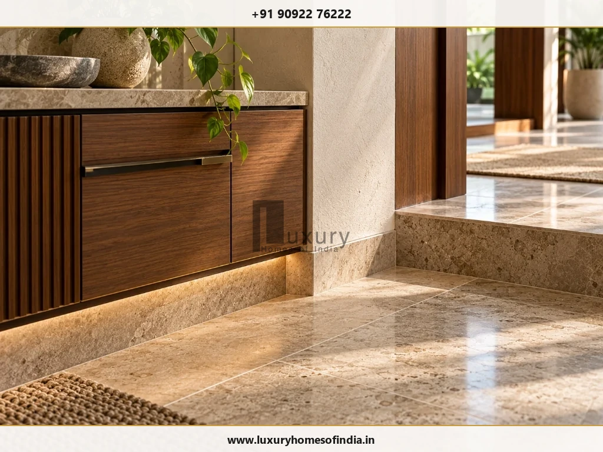
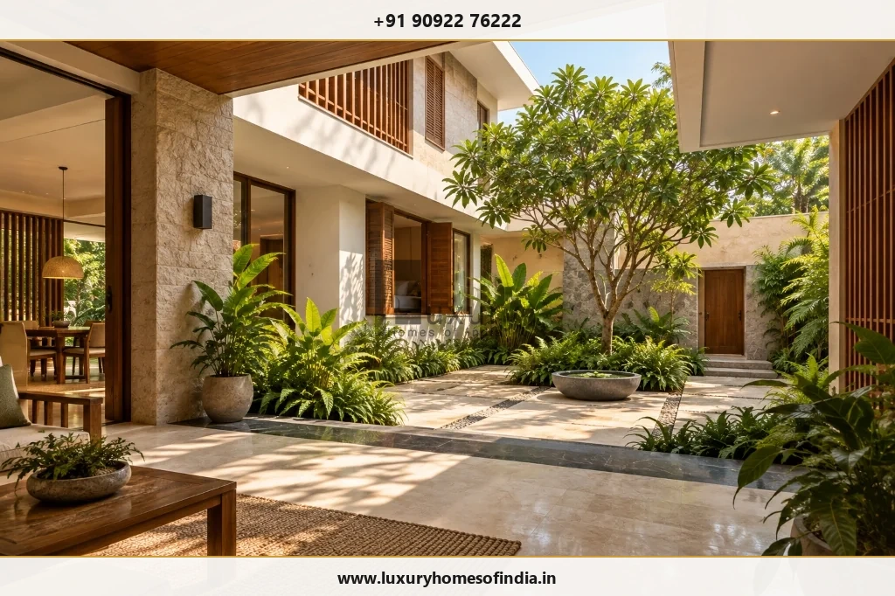
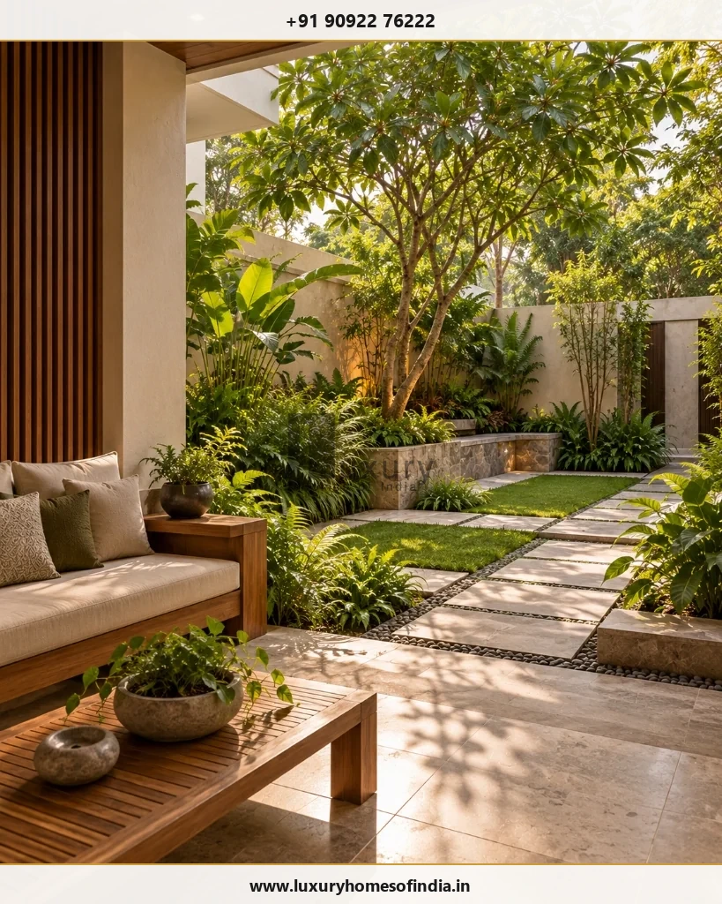
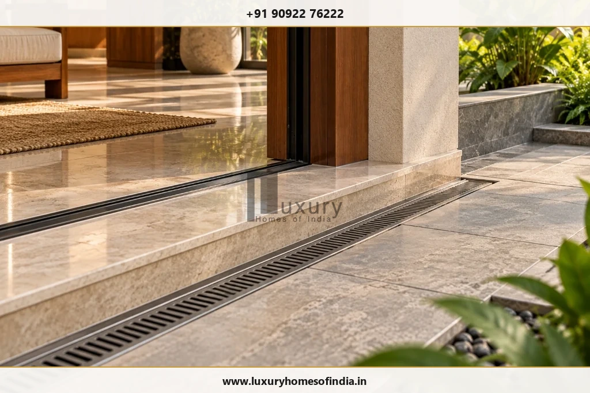

A luxury home is defined by more than its size, construction budget or expensive finishes. It brings together thoughtful architecture, functional space planning, carefully selected materials, comfortable interiors, privacy and dependable construction quality. The most successful luxury homes reflect the way their owners live, balancing aesthetics with everyday practicality.
For homeowners in India, luxury can take many forms: a contemporary villa with shaded outdoor spaces, a residence organised around a courtyard, or a personalised family home with carefully integrated technology. In Chennai, climate-responsive design, ventilation, rainwater management and material durability also deserve attention.
The key is to make deliberate choices at every stage, from the architectural concept and structural planning to the smallest interior detail. This guide explains ten features that contribute to a well-designed luxury home, how to evaluate them and why quality execution matters as much as appearance.
1. Timeless Architecture
2. Quality Materials
3. Space Planning
4. Climate Comfort
5. Bespoke Interiors
6. Purposeful Tech
7. Privacy & Security
8. Everyday Amenities
9. Outdoor Living
10. Construction Quality
1. Thoughtful Architecture and Timeless Design
Architecture establishes the character of a luxury home. Proportions, circulation, window placement, material transitions and the relationship between indoor and outdoor spaces all influence how a residence looks and feels.
Rather than relying on elaborate façades or passing trends, begin with the plot, household requirements, climate and intended architectural style.
Consider the following elements:
- A welcoming entrance with a clear arrival sequence.
- Well-proportioned living and dining spaces.
- Window openings positioned for views, daylight and privacy.
- A coherent relationship between exterior materials and interior finishes.
- Courtyards, terraces or double-height spaces where appropriate.
- Consistent detailing across the building.
A restrained design can be just as sophisticated as an elaborate one. The objective is architectural coherence, not visual complexity.
What to prioritise: Establish the design brief and spatial requirements before finalising the façade. Changes made early in planning are generally easier to coordinate than changes introduced during construction.
2. Quality Materials and Precise Craftsmanship
Materials contribute to a home's appearance, tactile quality, maintenance needs and long-term performance. A higher price does not automatically make a material suitable for every application.
Natural stone, quality tiles, refined joinery, well-specified windows, sanitaryware and durable external finishes can all contribute to a considered design. The appropriate selection depends on where each material will be used and how it will perform under everyday conditions.
Evaluate materials using five criteria:
- Appearance: Does the colour, texture and finish complement the overall design?
- Performance: Is the material suitable for the intended environment and use?
- Installation: Can the required detailing and workmanship be achieved?
- Maintenance: What cleaning, sealing, servicing or replacement may be needed?
- Availability: Can matching products and compatible components be obtained later?

Craftsmanship is equally important. Consistent alignment, neat edges, well-resolved junctions and properly installed fittings help create a finished appearance.
For exterior materials, assess exposure to sunlight, moisture, rain and routine cleaning. For interiors, consider wear, slip resistance where relevant and ease of maintenance.
What to prioritise: Approve physical samples and material specifications before procurement. Include installation requirements and acceptable finish standards in the project documentation.
3. Functional Space Planning
Luxury is not simply a question of square footage. It is the quality of the space and how naturally it supports daily activities.
A well-planned residence gives each area a clear purpose while avoiding awkward circulation, unusable corners and unnecessary corridors.
Depending on household needs, the layout may include:
- Comfortable living and dining areas.
- Bedrooms with practical furniture clearances.
- Adequate storage and wardrobe space.
- An efficient kitchen workflow.
- Private family areas and guest accommodation.
- A study, home office or hobby room.
- Convenient access between frequently used spaces.
The priorities will differ from one household to another. A family that regularly entertains may need a generous dining area and connected social spaces. Another may prefer quiet bedrooms, a dedicated workspace or more storage.
Think beyond the floor plan itself. Furniture dimensions, door swings, lighting positions and the location of electrical points all influence whether a room works well in practice.
What to prioritise: Review furniture layouts and daily movement patterns before approving architectural drawings. A larger room is not necessarily better if it makes the rest of the home less functional.
4. Natural Light, Ventilation and Thermal Comfort
A luxury residence should feel comfortable throughout the day, not merely look impressive in photographs.
Window placement, building orientation, shading, glazing, insulation and ventilation work together to influence indoor comfort.
Useful design considerations include:
- Positioning openings to make effective use of daylight.
- Providing suitable external shading where solar exposure is high.
- Assessing cross-ventilation in relation to the site and surrounding buildings.
- Considering courtyards or light wells where appropriate.
- Coordinating roof insulation and glazing specifications.
- Planning air-conditioning and ventilation systems as part of the overall design.
For homes in Chennai, heat, humidity, seasonal rainfall and the orientation of exposed façades deserve particular attention.
Large windows can provide attractive views and daylight, but their benefits should be assessed alongside heat gain, glare, privacy and cooling requirements. Natural ventilation also depends on site conditions, outdoor air quality, wind patterns and security needs.

What to prioritise: Evaluate daylight and solar exposure early in the design process. Ask the design team to coordinate passive design measures with mechanical cooling rather than treating them as separate decisions.
5. Personalised Interiors and Integrated Lighting
Luxury interiors should reflect the people who live in the home. A coordinated approach to colour, materials, lighting, furniture and storage usually creates a more cohesive result than selecting individual products in isolation.
Features may include custom kitchens, built-in wardrobes, considered ceiling details, carefully positioned lighting and furniture suited to the dimensions of each room.
Personalisation can come from artwork, collections, cultural preferences, hobbies and family routines. It does not require every wall or surface to become a statement feature.
Lighting deserves particular attention because it influences how finishes look and how spaces function. Ambient lighting provides general illumination, task lighting supports activities such as cooking or reading, and accent lighting highlights selected architectural or decorative elements.
Plan the lighting around the use of each room, including switch positions, glare control and access for maintenance.
What to prioritise: Develop an interior materials palette and lighting plan before finalising finishes. This helps coordinate ceilings, joinery, fixtures and electrical provisions.
6. Smart-Home Technology That Solves Real Needs
Smart-home technology can improve convenience when it is designed around the household's requirements.
Depending on priorities, a system may include automated lighting, air-conditioning controls, motorised blinds, smart access, security systems or energy monitoring.
However, technology is not automatically a mark of luxury. A complex installation can become frustrating if it is unreliable, difficult to operate or expensive to maintain.
Before choosing a system, consider:
- Which everyday tasks should become easier?
- Can residents operate the system without specialist assistance?
- Will components remain compatible as products change?
- What happens if the internet or a central controller fails?
- How will software updates, repairs and replacement parts be handled?
Electrical provisions, network coverage, conduits, equipment locations and service access should be considered during design and construction.
What to prioritise: Specify the required functions first and select the technology second. Retain practical manual controls for essential functions wherever appropriate.
7. Privacy, Security and Personal Space
Privacy is an important part of residential comfort, particularly where neighbouring buildings are close or the property faces a busy street.
The layout should consider how residents, guests and service personnel move through the home, and how public areas relate to bedrooms and family spaces.
Design measures may include:
- Separating entertaining areas from private rooms.
- Positioning windows to balance daylight, views and privacy.
- Screening outdoor seating from neighbouring properties where practical.
- Planning secure entrances and access points.
- Providing appropriate storage and service access.
- Integrating security equipment into the architectural design.
Privacy is not only about walls and gates. Sightlines from entrances, internal corridors, balconies and adjoining rooms also influence the experience of a home.
Security provisions should be selected according to the property and household's requirements, with attention to usability and ongoing maintenance.
What to prioritise: Review privacy and access during the layout stage rather than relying entirely on screens or security devices after construction.
8. Well-Designed Kitchens, Bathrooms and Everyday Amenities
Kitchens and bathrooms are used frequently, so their planning has a direct influence on everyday comfort.
Kitchens
A functional kitchen considers work zones, storage, lighting, ventilation and the movement of people. An island, pantry, integrated appliances or separate preparation area may be useful, depending on available space and cooking habits.
Bathrooms
Bathroom quality depends on more than fittings and surface finishes. Waterproofing, drainage, ventilation, accessible maintenance points and the coordination of plumbing installations are essential design considerations.
Additional amenities
Depending on the property and household's priorities, a luxury home may include a home office, entertainment room, gym, walk-in wardrobe, lift, swimming pool or dedicated outdoor seating area.
Every additional feature creates design, construction, servicing and maintenance requirements. An amenity is most valuable when it will be used and can be maintained appropriately.
What to prioritise: Finalise plumbing and electrical layouts, equipment requirements and installation details before finishes are fixed. Review the ongoing maintenance implications of specialist amenities before committing to them.
9. Outdoor Living and Climate-Appropriate Landscaping
Outdoor spaces can extend the living experience of a home. A courtyard, shaded terrace, garden or outdoor dining area can provide a useful connection between the architecture and its surroundings.
Landscape design should respond to the building, site conditions and intended use rather than being treated as decoration added at the end.
Consider:
- A welcoming entrance and well-planned driveway.
- Shaded seating for everyday use.
- Suitable planting for the local climate.
- Outdoor lighting and practical access.
- Drainage and rainwater movement.
- Privacy from neighbouring properties.
- Irrigation and long-term garden maintenance.
For Chennai homes, outdoor design should account for solar exposure, seasonal rainfall, drainage, humidity and plant maintenance. The location of trees and planting beds should also be coordinated with paths, foundations and underground services.
A smaller, carefully planned garden may be more useful than a larger outdoor area that is difficult to maintain.

What to prioritise: Coordinate landscape levels, drainage, external lighting and planting with the building design before finalising the external works.
10. Construction Quality, Safety and Long-Term Durability
A refined appearance cannot compensate for poor construction. Structural design, appropriate materials, skilled installation and coordination between trades are fundamental to a well-executed residence.
Important considerations include:
- Site assessment and appropriate foundation design.
- Structural engineering in accordance with applicable requirements.
- Quality checks for materials and workmanship.
- Waterproofing and drainage detailing.
- Coordinated plumbing and electrical installations.
- Inspections at relevant construction stages.
- Clear records of approved specifications and changes.
- Safe access to equipment and service points for future maintenance.
Construction quality depends on more than the final inspection. Some critical elements, including reinforcement, concealed services and waterproofing layers, may become difficult to inspect after subsequent work is completed.
For this reason, homeowners should agree on inspection points, documentation requirements and responsibility for approving changes before work begins.
Long-term durability also depends on repairability, product availability and maintenance access. These considerations should influence material selection and detailing from the beginning.

What to prioritise: Establish a clear scope, material specification, inspection process and change-control procedure. These help the design intent carry through to execution.
How Much Should You Spend on a Luxury Home?
There is no single construction budget that defines a luxury home. Two residences of similar size can have different costs because of structural requirements, design complexity, materials, interior scope, building services and amenities.
Before committing to a budget:
- Define household priorities and the intended built-up area.
- Develop the architectural concept and assess the plot.
- Separate essential requirements from optional upgrades.
- Document material specifications and interior inclusions.
- Request an itemised estimate with clear exclusions.
- Account for applicable approvals, external works and contingency.
- Agree on quality checks, payment milestones and the process for variations.
The aim is to align the design with the available budget before major procurement and construction decisions are made.
Planning a Luxury Home with Luxury Homes of India
Luxury home planning involves decisions across architecture, engineering, construction, interiors and external works. Coordinating these decisions early helps clarify the intended scope and identify practical constraints before execution.
Luxury Homes of India describes residential services including civil engineering and construction, architectural planning, structural engineering and interior execution on its website. The exact scope, responsibilities and deliverables should be confirmed for each proposed project.
Start Your Architectural & Construction Planning
Explore LHI's comprehensive turnkey residential capabilities across Chennai and South India:
Frequently Asked Questions
Essential answers regarding luxury residential architecture, materials, space planning, and construction standards:
Conclusion
What makes a home a luxury home is the way its architecture, construction, interiors and everyday experience work together.
Thoughtful space planning, carefully selected materials, comfortable indoor environments, privacy and durable construction create a stronger foundation for luxury living than expensive finishes alone.
The best choices depend on the plot, climate, household requirements and long-term maintenance expectations. By defining these priorities early and coordinating design decisions with construction requirements, homeowners can create a residence that feels personal, functional and enduring.
Planning a home around your lifestyle? Contact Luxury Homes of India to discuss your design and construction requirements.
Luxury Homes of India
#85, 4th Floor, Lotus Tower, Guindy, Chennai – 600032
Editorial note: The features discussed are general design considerations. Their suitability and cost depend on the plot, approved design, technical requirements and agreed project scope.
Editorial sources: Google Search Central guidance on helpful content and Search Essentials; LHI's published construction and company service pages.